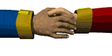

Interaction with People
How I interact with others in my dream job.
In this career, I would have the opportunity to work both independently and as part of a team. When writing code or solving problems, I would often work alone so that I can concentrate fully on the task. However, software development is rarely done completely alone, as most projects require teamwork and collaboration. I would work with other developers, designers, and project managers to plan, build, and improve software. Communication is very important because it helps ensure that everyone understands the goals of the project and works together effectively. I enjoy this balance between working independently and working with others because it allows me to stay focused while also sharing ideas and learning from my teammates. Being able to collaborate and communicate well is an important part of success in this field.